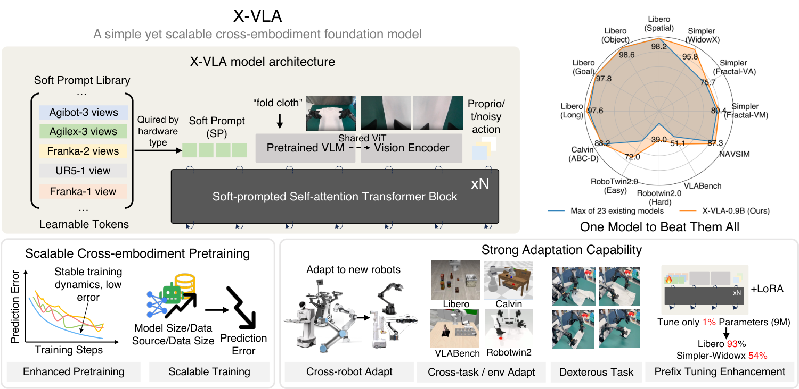
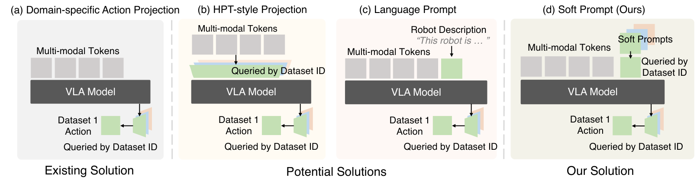
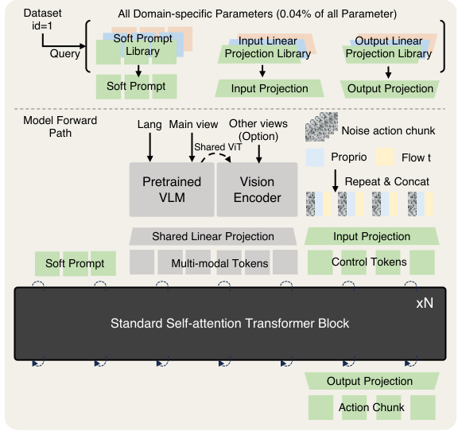
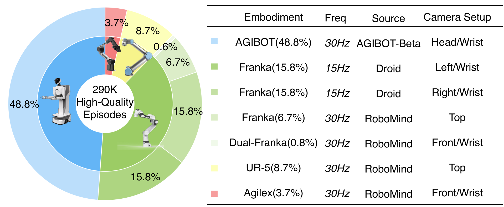
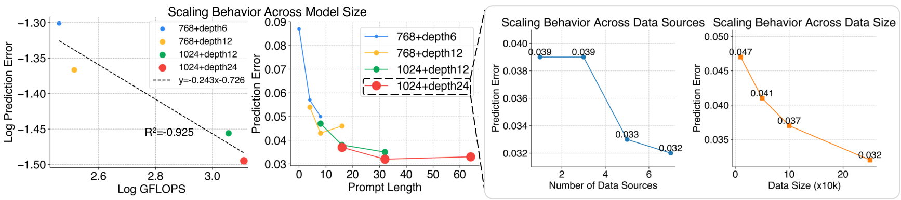
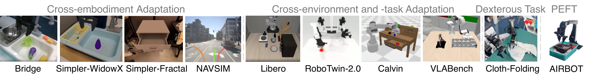
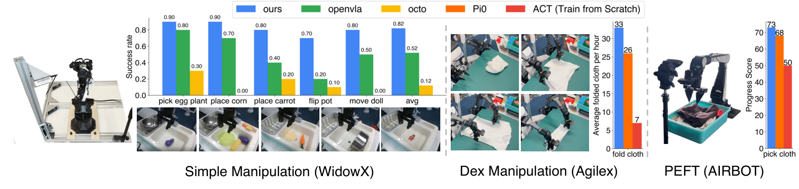
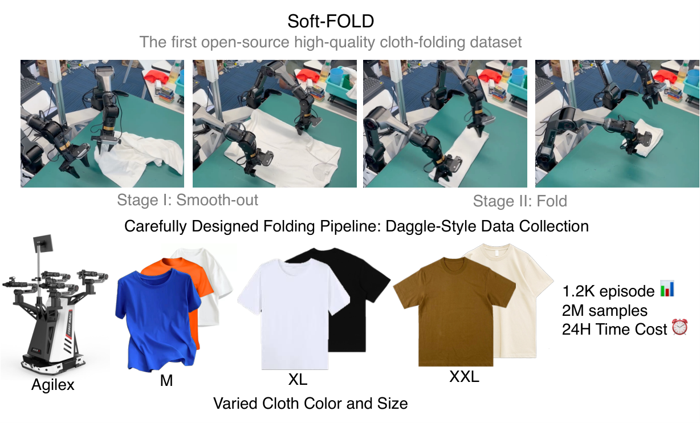
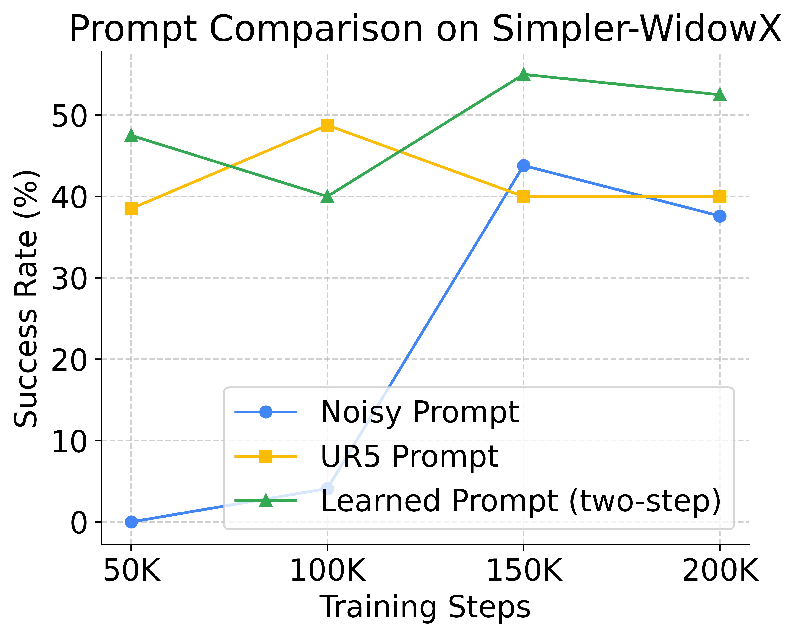

D6. X-VLA: Soft-Prompted Transformer as Scalable Cross-Embodiment Vision-Language-Action Model¶
0. 읽기 전 약어 및 핵심 용어¶
이 문서를 읽기 전에 아래 약어와 용어를 먼저 정리한다. 이후 본문에서는 괄호 안의 약어를 사용한다.
- Artificial Intelligence (AI): 사람의 지각, 추론, 학습, 의사결정 능력을 기계가 수행하도록 만드는 인공지능 분야를 뜻한다.
- Large Language Model (LLM): 대규모 텍스트 데이터로 학습되어 언어 이해, 생성, 추론, 계획에 쓰이는 foundation model이다.
- Vision-Language Model (VLM): 이미지와 텍스트를 함께 입력받아 시각-언어 이해나 생성 작업을 수행하는 모델이다.
- Vision-Language-Action (VLA): 시각 관측과 언어 명령을 함께 받아 로봇 action까지 생성하는 모델 또는 학습 패러다임이다.
- Foundation Model (FM): 대규모 데이터로 사전학습되어 다양한 downstream task로 전이되는 범용 기반 모델이다.
- End-Effector (EEF): 로봇 팔 끝에서 실제로 물체와 상호작용하는 gripper, hand, tool의 pose나 상태를 뜻한다.
- State of the Art (SOTA): 특정 benchmark나 task에서 현재 가장 높은 수준의 성능을 보이는 방법을 뜻한다.
- Behavior Cloning (BC): expert demonstration의 observation-action pair를 supervised learning으로 모방하는 imitation learning 방법이다.
- Parameter-Efficient Fine-Tuning (PEFT): 전체 모델을 업데이트하지 않고 adapter, prompt, LoRA 등 일부 parameter만 조정하는 fine-tuning 방법이다.
- Hybrid Prompt Tuning (HPT): prompt나 adapter 계열 parameter를 이용해 pretrained model을 효율적으로 적응시키는 tuning 방식이다.
- Distributed Robot Interaction Dataset (DROID): 여러 장소에서 수집한 in-the-wild robot manipulation demonstration dataset이다.
- A Low-cost Open-source Hardware System for Bimanual Teleoperation (ALOHA): 저비용 양팔 teleoperation hardware와 imitation learning setup을 뜻한다.
- Action Chunking with Transformers (ACT): 여러 timestep의 action chunk를 한 번에 예측해 fine-grained robot manipulation을 학습하는 transformer policy이다.
- Lifelong Robot Learning Benchmark (LIBERO): 로봇이 여러 task를 순차적으로 배우며 knowledge transfer와 forgetting을 평가하는 benchmark이다.
- Navigation Simulation (NAVSIM): navigation policy나 autonomous agent를 평가하기 위한 simulation benchmark 계열을 뜻한다.
- Cross-Embodiment Vision-Language-Action model (X-VLA): 서로 다른 robot embodiment의 camera, action space, hardware 차이를 하나의 VLA 안에서 다루려는 cross-embodiment model이다.
- Physical Intelligence pi-zero model (pi0): Physical Intelligence가 제안한 general robot control용 vision-language-action flow model이다.
- Physical Intelligence pi-zero-point-five model (pi0.5): pi0를 open-world household manipulation으로 확장한 VLA model이다.
- Physical Artificial Intelligence (Physical AI): 디지털 공간의 예측을 넘어 물리 세계에서 지각, 예측, 계획, 행동, 안전 검사를 수행하는 AI 시스템을 뜻한다.
- Policy/Dynamics Model (PDM): 문맥에 따라 policy model 또는 dynamics model을 뜻하며, agent의 action 선택이나 상태 전이를 모델링한다.
- Prompt Strategy / Prompt Set (PS): prompt 기반 adaptation에서 사용하는 prompt 구성이나 prompt 집합을 뜻한다.
1. Metadata¶
| Field | 내용 |
|---|---|
| ID | D6 |
| Title | X-VLA: Soft-Prompted Transformer as Scalable Cross-Embodiment Vision-Language-Action Model |
| Authors | Jinliang Zheng, Jianxiong Li, Zhihao Wang, Dongxiu Liu et al. |
| Affiliation / Team | AIR Tsinghua / Shanghai AI Laboratory / Peking University |
| Venue / Status | ICLR 2026 |
| Date | 2026-04-23 |
| Link | https://iclr.cc/virtual/2026/poster/10007740 |
| arXiv | https://arxiv.org/abs/2510.10274 |
| Local source | paper_corpus/sources/D6 |
| Source figures | paper_corpus/figures_source/D6/manifest.md |
2. 핵심 요약¶
X-VLA는 cross-embodiment VLA training에서 발생하는 hardware/action/camera/task heterogeneity를 soft prompt로 다루는 flow-matching 기반 VLA architecture다. 각 data source 또는 hardware configuration마다 learnable embedding prompt를 두고, 이 prompt가 model 내부 representation을 embodiment-aware하게 안내한다.
기존 VLA들이 주로 embodiment별 action decoder head로 action space 차이를 처리했다면, X-VLA는 heterogeneity가 action output뿐 아니라 camera setup, proprioception, visual domain, task distribution 전반에 존재한다고 본다. 따라서 soft prompt를 early fusion/action generation 단계에 넣어 shared Transformer가 embodiment-agnostic policy를 학습하도록 유도한다.
3. 왜 중요한가?¶
- 2026년 VLA trend인 cross-embodiment scaling과 parameter-efficient adaptation을 잘 보여준다.
- soft prompt를 robotics heterogeneity 처리에 적용해, domain-specific head/handwritten language prompt/MoE보다 단순한 대안을 제안한다.
- 0.9B model을 290K episode, 7 data source, 5 robot arm type, 7 hardware setup에 pretraining한다.
- simulation 6개 benchmark와 real robot 3개 platform에서 평가한다.
- 9M parameter, 즉 약 1% parameter만 tuning하는 PEFT로도 pi0급 adaptation 성능에 근접한다고 보고한다.
4. Overall Concept¶

Figure 1. X-VLA overview. soft prompt가 cross-embodiment dataset의 heterogeneity를 흡수하고, standard self-attention transformer block stacking으로 scalable VLA training과 domain-specific finetuning을 가능하게 한다. Source figure: Figures/intro_small.pdf.
핵심 intuition은 다음이다.
| 문제 | 기존 접근 | X-VLA 접근 |
|---|---|---|
| action space 차이 | domain-specific action head | soft prompt + 정렬된 action representation |
| camera setup 차이 | 직접 concatenation 또는 handcrafted description | learned source-specific prompt |
| embodiment 차이 | architecture/head 분기 | prompt가 hardware-specific prior를 encode |
| adaptation cost | full fine-tuning | prompt warm-up + PEFT/LoRA |
5. Heterogeneous Cross-Embodiment Training¶
논문은 heterogeneous dataset mixture를 다음처럼 정의한다.
| Notation | 의미 |
|---|---|
| \(\mathcal{D}^{H}\) | \(H\)개 heterogeneous dataset으로 구성된 mixed robot dataset |
| \(\mathcal{D}_i\) | \(i\)번째 data source 또는 robot dataset |
| \(H\) | heterogeneous data source 개수 |
| \(h_i\) | \(\mathcal{D}_i\)가 수집된 hardware configuration |
| \(\mathcal{H}\) | 가능한 hardware setup의 공간 |
여기서 \(h_i\)는 arm kinematics, control interface, camera configuration, deployment scenario를 포함한다. 즉, X-VLA에서 embodiment는 단순히 action dimension이 아니라 data-generating system 전체다.
6. Soft Prompt Formulation¶
X-VLA는 각 data source에 learnable prompt를 할당한다.
| Notation | 의미 |
|---|---|
| \(P^{H}\) | heterogeneous dataset 전체에 대한 soft prompt library |
| \(p_i\) | \(i\)번째 data source/hardware setup의 learnable prompt embedding |
| \(\Phi\) | hardware configuration을 prompt space로 보내는 latent mapping |
| \(h_i\) | 실제 hardware/camera/control/task setup |
| \(\mathbb{R}^{k}\) | prompt embedding space |
\(\Phi\)는 사람이 정의한 template이 아니다. prompt \(p_i\)는 random initialization에서 시작해 end-to-end training으로 hardware-specific configuration을 암묵적으로 학습한다. 이 점이 language prompt와의 차이다.
7. Methods for Handling Heterogeneity¶

Figure 2. Four methods for handling cross-embodiment heterogeneity. domain-specific action projection, HPT-style projection, language prompt, soft prompt를 비교한다. Source figure: Figures/compare_with_others.pdf.
| 방법 | 장점 | 한계 |
|---|---|---|
| domain-specific action projection | action dimension 차이를 직접 처리 | final output에서만 heterogeneity 처리 |
| HPT-style projection | observation을 shared representation으로 align | pretrained VLM representation을 흔들어 training instability 가능 |
| language prompt | hardware 정보를 text로 설명 가능 | handcrafted template 의존, scalability 낮음 |
| soft prompt | learnable, lightweight, early guidance | prompt가 무엇을 학습하는지 해석/관리 필요 |
논문은 soft prompt가 가장 안정적인 training curve와 좋은 asymptotic performance를 보인다고 주장한다.
8. Architecture¶

Figure 3. X-VLA architecture. soft prompt library, vision encoder, language/main view/other view encoding, proprioception, noisy action chunk, flow timestep이 token으로 결합되고 standard self-attention transformer block을 거쳐 action chunk를 출력한다. Source figure: Figures/archi.pdf.
X-VLA의 입력 stream은 크게 두 가지로 나뉜다.
| Stream | 구성 | 처리 |
|---|---|---|
| high-dimensional observation | multi-view images, language instruction | Florence-Large VLM encoder와 shared vision backbone |
| low-dimensional proprioceptive-action | proprioceptive state, noisy action, flow timestep | linear projection으로 high-dimensional feature space에 정렬 |
main camera와 language는 VLM encoder가 처리하고, wrist/auxiliary view는 별도 shared vision backbone으로 처리한다. 이는 wrist camera가 빠르게 변하고 manipulation detail에 중요하지만, language reasoning과 직접 섞으면 semantic gap이 커질 수 있기 때문이다.
9. Flow-Matching Behavior Cloning Objective¶
X-VLA는 flow matching으로 action chunk를 생성한다.
| Notation | 의미 |
|---|---|
| \(\mathcal{L}^{\mathrm{FM}}_{\mathrm{BC}}\) | flow-matching behavior cloning loss |
| \(t\) | flow timestep |
| \(\mathcal{U}(0,1)\) | 0과 1 사이 uniform distribution |
| \((\mathbf{o},\mathbf{A})\) | observation과 expert action chunk pair |
| \(\mathcal{D}\) | robot demonstration dataset |
| \(\mathbf{A}^{0}\) | 초기 random noise action sample |
| \(\mathbf{A}\) | expert action chunk |
| \(\mathbf{A}^{t}\) | noise와 expert action 사이의 interpolation sample |
| \(\mathbf{v}_{\theta}\) | X-VLA가 예측하는 vector field |
| \(\theta\) | model parameter |
이 objective는 random noise에서 expert action chunk로 이동하는 vector field를 학습한다. pi0의 flow matching과 같은 큰 계열이지만, X-VLA는 soft prompt로 heterogeneous dataset source를 조건화한다는 점이 다르다.
10. Data Mixture and Training Recipe¶

Figure 4. Mixed data recipe. AGIBOT-beta, RoboMind, DROID 등에서 온 290K episodes가 7 hardware setup, 5 robot arm type을 구성한다. Source figure: Figures/data_mixture.pdf.
pretraining recipe의 주요 요소는 다음이다.
| 요소 | 설명 |
|---|---|
| 정렬된 action representation | EEF xyz, Rotate6D absolute rotation, binary gripper state로 action을 통일 |
| intention abstraction | 4초 future trajectory를 30개 anchor point로 downsample하여 high-level intention을 추상화 |
| balanced data sampling | domain과 trajectory 양쪽을 shuffle하여 dominant domain overfitting 완화 |
| custom learning rate | soft prompt와 VLM module에 낮은 LR을 적용해 pretrained representation drift 방지 |
| two-step adaptation | prompt warm-up 후 joint policy adaptation |
11. Two-Phase Training and Adaptation¶
X-VLA 학습은 두 단계다.
| 단계 | 내용 |
|---|---|
| Phase I: Pretraining | backbone \(\pi_{\theta}\)와 soft prompt \(P^H\)를 heterogeneous dataset에서 공동 학습 |
| Phase II: Domain adaptation | 새로운 hardware \(h_{\mathrm{new}}\)에 대해 새 prompt \(p_{\mathrm{new}}\)를 만들고 warm-up 후 policy를 adaptation |
새 domain prompt는 다음처럼 표현된다.
| Notation | 의미 |
|---|---|
| \(p_{\mathrm{new}}\) | novel hardware/domain에 대해 새로 도입되는 learnable soft prompt |
| \(\mathbb{R}^{k}\) | prompt embedding space |
prompt warm-up에서는 backbone을 freeze하고 prompt를 먼저 학습한다. 이후 joint adaptation에서 backbone과 prompt를 함께 조정한다.
12. Scaling Experiments¶

Figure 5. Scaling experiments. model capacity, data diversity, data volume이 증가할수록 validation prediction error가 감소하며, 논문은 가장 큰 설정에서도 saturation이 보이지 않는다고 보고한다. Source figure: Figures/scaling.pdf.
논문은 pretraining validation error가 downstream adaptation 성능과 강하게 상관된다고 보고한다. 따라서 scaling 실험에서는 denoising 이후 predicted action과 ground-truth action 사이의 \(\ell_1\) error를 주요 proxy metric으로 사용한다.
13. Simulation Benchmark Results¶

Figure 6. Adaptation evaluation setups. LIBERO, Simpler, VLABench, RoboTwin-2.0, Calvin, NAVSIM 등 6개 simulation benchmark를 포함한다. Source figure: Figures/all_bench.pdf.
X-VLA-0.9B는 Simpler-WidowX 95.8%, LIBERO average 98.1%, RoboTwin-2.0 easy 70.0/hard 39.0, VLABench average PS 51.1, NAVSIM PDM score 87.3 등 여러 benchmark에서 기존 SOTA 대비 높은 결과를 보고한다.
14. Real-World Experiments¶

Figure 7. Real-world evaluation. WidowX, AIRBOT, AgileX-fold 등 3개 real-world embodiment에서 simple manipulation, dexterous manipulation, PEFT fast adaptation을 평가한다. Source figure: Figures/real_exp.pdf.
real-world 평가에서 중요한 결과는 cloth-folding이다. X-VLA는 1,200개의 Soft-Fold trajectory로 AgileX bimanual cloth folding에 adaptation하고, 시간당 33개 fold throughput을 보고한다. 논문은 이것이 closed-source pi0-folding 모델과 비교 가능한 수준이라고 설명한다.
15. Soft-Fold Dataset¶

Figure 8. Soft-Fold dataset. disordered cloth를 smooth out한 뒤 fold하는 두 단계로 demonstration을 설계하고, 1,200 episode를 수집한다. Source figure: Figures/softfold.pdf.
cloth folding은 deformable object dynamics와 long-horizon bimanual manipulation이 결합된 task다. 저자들은 random human strategy가 많으면 policy가 inconsistent behavior에 갇힐 수 있어, smoothing stage와 folding stage를 나누고 DAgger-style iterative data collection을 사용했다고 설명한다.
16. Soft Prompt 해석¶
X-VLA는 learned soft prompt를 T-SNE로 시각화해 hardware configuration별 cluster가 형성된다고 보고한다. 또한 두 Franka setup처럼 유사한 setup은 가까이 섞이는 경향을 보여, prompt가 단순 dataset ID memorization만 하는 것이 아니라 cross-embodiment similarity를 반영할 수 있음을 시사한다.

Figure 9. Prompt comparison. learned/adapted prompt는 random prompt보다 빠르게 수렴하고 높은 성능에 도달하며, 유사 embodiment의 pretrained prompt도 early transfer benefit을 줄 수 있다. Source figure: Figures/prompt_comparison.png.
17. Physical AI / World Model 관점¶
X-VLA는 explicit world model은 아니지만, embodiment-conditioned physical policy representation 측면에서 중요하다.
| 질문 | X-VLA의 답 |
|---|---|
| embodiment heterogeneity를 어떻게 표현하는가? | data source별 soft prompt embedding |
| physical action supervision을 어떻게 정렬하는가? | 정렬된 EEF pose, Rotate6D rotation, binary gripper |
| dexterous/deformable task는 어떻게 다루는가? | Soft-Fold dataset과 flow-matching action generation |
| 새 robot에는 어떻게 적응하는가? | new prompt warm-up + PEFT/joint adaptation |
| world dynamics를 예측하는가? | future state prediction이 아니라 action vector field를 학습 |
world model 관점에서는 X-VLA가 dynamics rollout 대신 embodiment-aware action manifold를 학습하는 policy-centric 접근이라고 볼 수 있다.
18. 기존 논문들과의 연결¶
| 연결 논문 | 연결 포인트 |
|---|---|
Open X-Embodiment (D1) |
cross-embodiment dataset scaling 문제 |
DROID (D3) |
pretraining data source 중 하나이며 scene diversity 축 제공 |
Octo (D4) |
open-source generalist policy와 cross-dataset policy pretraining |
OpenVLA (D5) |
VLA architecture와 open-source VLA benchmark |
pi0 (P4) |
flow matching action generation과 비교되는 VLM+action expert 계열 |
pi0.5 (P5) |
heterogeneous data mixture와 adaptation recipe의 최근 흐름 |
ALOHA/ACT (D2) |
dexterous action chunking과 cloth-folding baseline |
19. 한계와 주의점¶
- 0.9B는 LLM/VLM foundation scale에 비하면 아직 작고, 더 큰 scaling law는 미해결이다.
- robotics corpus의 scale과 quality가 language/vision data보다 제한적이다.
- low-dimensional action label은 task intent나 high-level reasoning supervision을 충분히 담지 못한다.
- deployment는 여전히 embodiment-specific adaptation과 demonstration collection을 요구한다.
- soft prompt가 hardware abstraction을 학습한다는 해석은 설득력 있지만, universal kinematic descriptor 같은 명시적 representation과의 결합은 future work다.
20. 발표 구성 제안¶
- cross-embodiment VLA에서 heterogeneity가 왜 action dimension만의 문제가 아닌지로 시작한다.
- Figure 1과 Figure 2로 soft prompt의 motivation을 설명한다.
- dataset mixture와 hardware setup을 수식으로 정의한다.
- soft prompt formulation을 설명하고 language prompt/HPT/MoE와 비교한다.
- architecture와 flow matching objective를 연결해 X-VLA가 action chunk를 어떻게 생성하는지 설명한다.
- scaling, simulation benchmark, real-world cloth folding 순서로 결과를 정리한다.
- 마지막에 "embodiment-aware prompt가 world model의 대안인가, 보완인가"라는 질문으로 토론을 열면 좋다.
21. 토론 질문¶
- soft prompt는 hardware ID를 memorize하는 것일까, 실제 embodiment similarity를 학습하는 것일까?
- language prompt로 hardware를 설명하는 방식이 왜 충분하지 않을까?
- action alignment를 EEF pose로 통일하는 방식은 humanoid나 legged robot까지 확장될 수 있을까?
- PEFT로 prompt/LoRA만 조정하는 방식이 full fine-tuning보다 언제 유리할까?
- 운영/현장 적용 관점에서 heterogeneous robot dataset의 sampling weight, prompt assignment, adaptation budget을 함께 최적화할 수 있을까?
22. 한 문장 정리¶
X-VLA는 cross-embodiment VLA training의 heterogeneity를 learnable soft prompt로 흡수하고, flow matching action generation과 parameter-efficient adaptation을 결합해 scalable robot foundation model의 한 방향을 제시한 2026년 ICLR 논문이다.